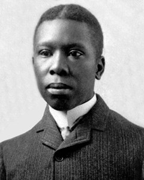
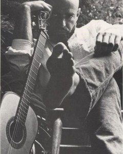
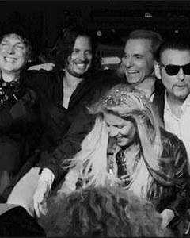
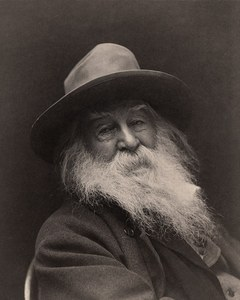
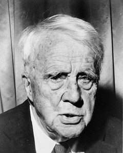
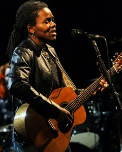
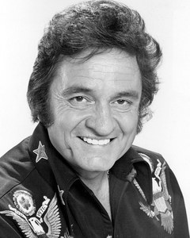
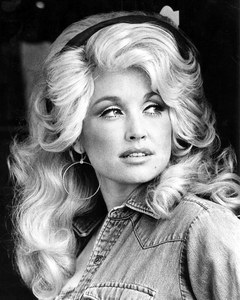
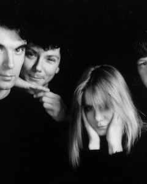

WedAug 26poem

PLDPaul Laurence Dunbar
What do you notice? Who is the “we”? What does the mask cost, and what does it protect?
Dayton, Ohio · ~5 min · open it →
Every session starts with something read aloud — a poem, a song lyric, once a picture book — talked about for ten minutes, then left to do its work. Nothing to prepare and nothing to turn in. They're collected here with the question each one opens, so you can find one again afterwards, catch up on a session you missed, or read ahead.

PLDPaul Laurence Dunbar
What do you notice? Who is the “we”? What does the mask cost, and what does it protect?
Dayton, Ohio · ~5 min · open it →
George Ella Lyon
What do you notice — the lists, the specific names, the foods and sayings? The poem is built to be borrowed. Where are you from?
built to be borrowed · open it →

SS
MPMissing Persons
Read the lyric, then hear it sung. One voice asking whether anybody on the other end is listening. What does the singing do to those words that the page doesn’t?
1982 · lyric · open it → · hear it sung →
Galway Kinnell
Which words make you taste it — “the black art of blackberry-making,” the lumpy words he loves to “squeeze, squinch open, and splurge”? Point to the exact ones.
words you can taste · open it →
Seamus Heaney
Heaney never says he’s grieving — he shows it: the knelling bells, the baby cooing, the old men standing to shake his hand, and the last line. Where does the grief land?
shown, never told · open it →
Jim Daniels
Where does the poem move fast, break, and refuse to sit still? What rules is it not following — and why does it work anyway?
breaks rules in style · open it →

WWWalt Whitman
“That the powerful play goes on, and you may contribute a verse.” On the last day of Act I, what is the verse that only you can add?
closes Act I · open it →
Linda Pastan
Don’t get stuck on “ethics class.” When has the meaning of something a teacher asked or said only caught up with you years later?
+ the poet reading it · open it → · hear Pastan read it →
Emily Dickinson
Tell all the truth but tell it slant
What does she mean by telling the truth “slant” instead of straight out? When have you told something true by coming at it sideways?
scene, not statement · open it →
Naomi Shihab Nye
“You can’t order a poem like you order a taco.” Poems hide in the ordinary until someone looks. Read it while you wait — then tell me the thread you want to chase.
29 lines · conference day · open it →
Robert Hayden
The meaning arrives only at the end — “What did I know, what did I know / of love’s austere and lonely offices?” How does one scene carry a whole relationship?
one scene, whole life · open it →
E. E. Cummings
Watch what he does to grammar on purpose: “who pays any attention / to the syntax of things / will never wholly kiss you.” When does breaking the rule tell it truer?
syntax bent on purpose · open it →

RFRobert Frost
The speaker isn’t in the woods — he’s looking back, “ages and ages hence,” making a story out of a choice. How does meaning get made only in the looking-back?
made in the looking-back · open it →
Walt Whitman
“Do I contradict myself? / Very well then I contradict myself, / (I am large, I contain multitudes.)” Your currere is one voice — how many kinds of writing are packed inside it?
I contain multitudes · open it →
Walt Whitman
When I Heard the Learn’d Astronomer
The lecture has the charts, the proofs, the columns. He walks out and looks up at the stars in silence. On the day you start researching: what does the summary miss?
8 lines · open it →

TCElizabeth Bishop
A grubby station rendered detail by detail until “Somebody loves us all.” The machine gives you the average station. What does Bishop see that an average could not?
41 lines · open it →

NINNine Inch Nails · Johnny Cash
Same words, two voices: Reznor at 29 writing it, Cash at 70 singing it into something else entirely. On the day you start your transformed artifact — what did the second version do to the first?
1994 / 2002 · two versions · open it → · Cash’s version →

DPDolly Parton
A coat sewn out of rags and scraps that nobody else valued, and it holds together as one thing — because of how it was put together, and who put it there. That is your multimodal project.
1971 · lyric · open it →

THTalking Heads
“And you may ask yourself — well, how did I get here?” You are writing your reflective note today: the looking-back that turns a pile of work into a story about how you got here.
1980 · lyric · open it →
Dr. Seuss
“You have brains in your head. You have feet in your shoes. You can steer yourself any direction you choose.” The last day of the term, after you have shown the room what you made.
1990 · read from the book · open it →